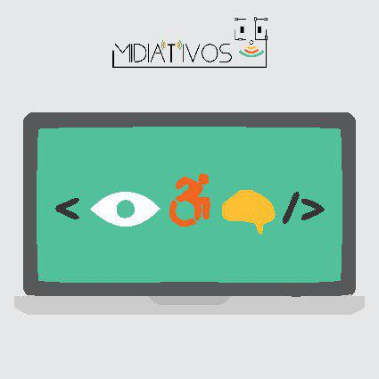
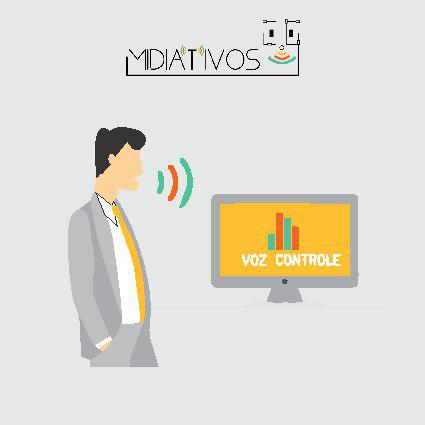
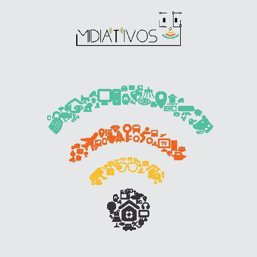
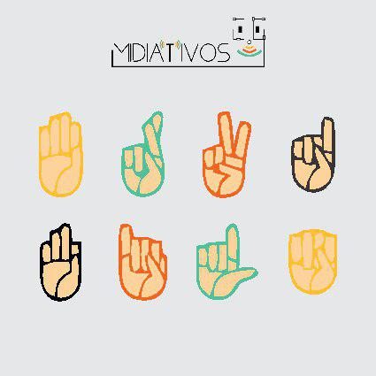

Project A11Y
O Projeto A11Y de Acessibilidade tem como objetivo ajudar a tornar a acessibilidade da web mais fácil para os desenvolvedores de front-end implementarem

Controle Por Comando de Voz
Você pode adicionar dinamicamente comandos enquanto artyom está ativo. Os comandos são armazenados em uma matriz para que você possa adicioná-los sempre que quiser e eles serão processados.

Acessibilidade
O termo acessibilidade significa incluir a pessoa com deficiência na participação de atividades como o uso de produtos, serviços e informações.

Prodeaf
O ProDeaf é um software de tradução de texto e voz na língua portuguesa para Libras - a língua brasileira de sinais, com o objetivo de realizar a comunicação entre surdos e ouvintes.
Download Site Modelo
Clique no botão abaixo e faça download do site modelo, disponibilizado sobre as licenças GPL
Download do Site ModeloProjetos
O Grupo Midiativos, neste Curso já Desenvolveu.
- Quadrinhos (MidiaCity) O mesmo descreve a saga de alunos que estão descobrindo como pesquisar em mídias interativas, Pois naquele momento tudo era muito novo para os mesmos.
- Jogo sobre a Cidade (MOOV) O jogo criado pelo midiativos,sendo um jogo que nos leva a desafios pelos espaços urbanos, e perguntas sobre cidadania, este jogo foi desenvolvido e jogável na plataforma scratch composto por 4 fasess.
- Sistema GPBL(Sistema de Gestão de Notas) O sistema tem como proposito ajudar a turma e os tutores na analise e comosição da nota das turmas de um curso que usa a metodologia PBL.
Manuais
A Acessibilidade Web, possui alguns Manuais e abaixo listaremos alguns deles.
- Cartilha sobre acessibilidade na Web A Cartilha de Acessibilidade na Web foi desenvolvida pelo GT de Acessibilidade na Web do W3C Brasil .
- Manual do Orca O Orca é um leitor de tela livre, gratuito, flexível e extensível, que dispõe acesso a interfaces gráficas do desktop através de fala e Braille atualizável. O leitor funciona com aplicações e conjuntos de ferramentas que suportam AT-SPI, que é a principal infraestrutura de tecnologia assistiva em sistemas livres do tipo Unix.
- eMAG - Modelo de Acessibilidade em Governo Eletrônico Uma das principais atribuições do Governo Federal é promover a inclusão social, com distribuição de renda e diminuição das desigualdades. Entre as diversas iniciativas que visam atingir esse objetivo, o governo investe no uso adequado e coordenado da tecnologia porque compreende a inclusão digital como caminho para a inclusão social.
Publicações
Outras Publicações dos Midiativos
Encontre-nos
E-mail: nossoemail@gmail.com